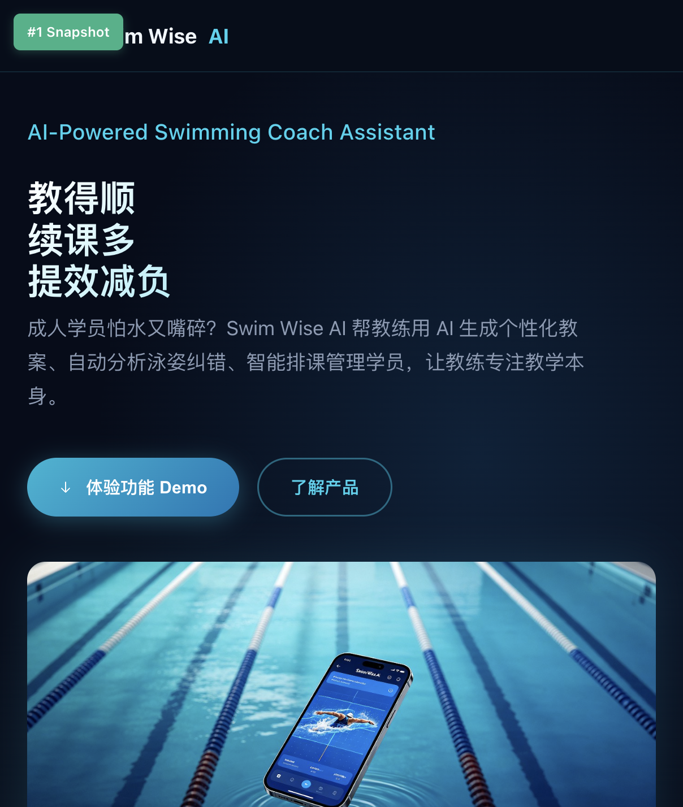
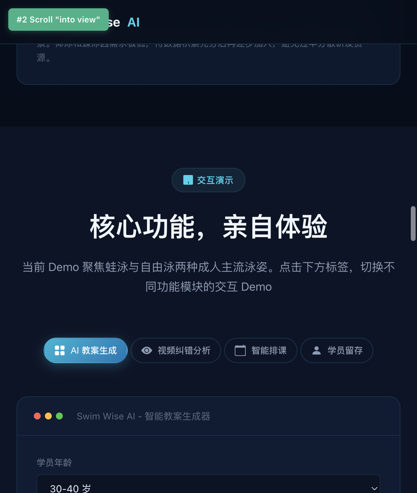
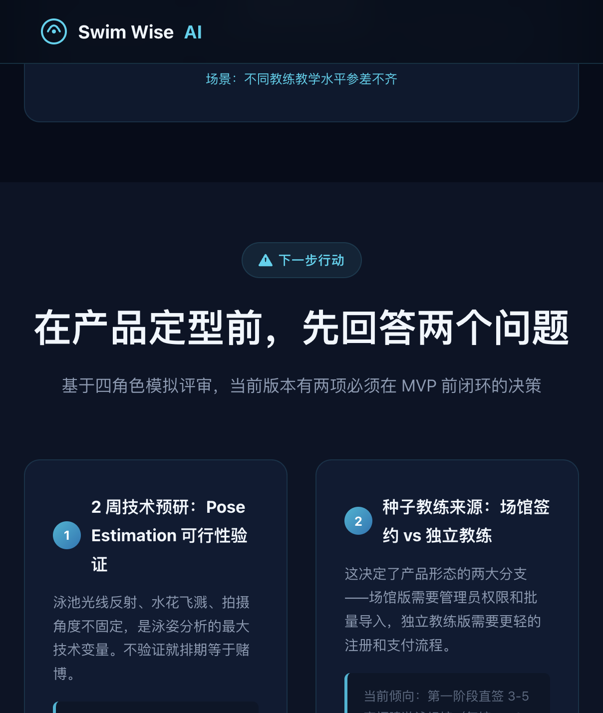

整个项目的起点是一份手写的 PRD 文档，大概 3000 字，描述了"泳智教练"这个产品的目标用户、核心功能和商业指标。我没有把 PRD 原文直接丢给 TRAE，而是拆成了几个明确的指令：
- 第一个指令：根据 PRD 搭建页面骨架——Hero 区、痛点区、产品介绍区、交互 Demo 区、数据指标区、下一步行动区，六个区块的 HTML 结构和 CSS 变量体系
- 第二个指令：生成三张配图（Hero 背景、痛点信息图、App 模拟图），要求深色调、泳池场景、不带任何文字叠加
- 第三个指令：实现四个交互 Demo 模块的 JS 逻辑（教案生成、视频分析、排课、留存）
拆指令的好处是每一步的输出可预期、可检查。如果一口气让 TRAE "根据 PRD 做一个完整 Demo"，大概率会拿到一个半成品——结构有了但交互是死的，或者交互有了但数据是假的。

图 1：页面骨架搭好后的 Hero 区，三行核心主张（教得顺、续课多、提效减负）和产品模拟图一次到位
四个 Demo 模块里，"AI 教案生成"和"智能排课"的实现复杂度最高。
教案生成模块需要覆盖 4 个水平等级（零基础、初学、进阶、提高）乘以 4 个教学目标（呼吸、打腿、完整配合、耐力），共 16 种组合，每种组合要输出四个阶段的教案内容。第一次只写了 4 种就提交了，点击其他组合时页面直接空白。发现之后补全了全部 16 组数据。
排课模块踩了一个 CSS 布局的坑：原方案用 HTML table 的 rowSpan 来处理跨时间段课程，但页面主框架用的是 CSS Grid，rowSpan 在 Grid 里无效。最后改成了"占用位图"方案——用一个 JS 对象记录每个时间段是否已被占用，渲染时跳过已占用的格子，跨时段课程通过视觉高度拉伸来体现。

图 2：四个功能模块通过 Tab 切换，教案生成器支持三级参数选择后一键生成
页面功能跑通之后，我让 TRAE "以专业 AI 产品经理的视角，检查这个 Demo 是否有硬伤"。这一步找出了六个需要修复的问题：
ARR 目标数字对不上
PRD 写的是"首年 ARR 1000 万"，但自家算式是 300 教练 x 35% 转化 x 250 元/月 x 12 月 = 31.5 万。数学摆在那儿，没法圆。修正为 30-50 万，定位成 PMF 验证期而非规模增长期。
指标缺少单位
数据指标区写的"60""30""40""7"，没有 % 或"万"这样的单位。评审看到裸数字会一头雾水。全部补上了单位后缀。
续课率指标不可归因
"续课率提升 30%"听起来漂亮，但没法证明是这个产品带来的。改成了"课后报告发送率 ≥ 80%"——这个动作是产品直接触发的，可以追踪。
AI 精度阈值缺失
视频分析模块只说了"AI 自动分析泳姿"，但没有定义什么是"准"。补上了两条硬标准：与教练标注一致率 ≥ 75%，低于 60% 置信度的结果不展示。
泳姿覆盖不全
Demo 只做了蛙泳和自由泳，没提仰泳和蝶泳的计划。加了一个"泳姿覆盖路线图"模块，标明 MVP 阶段聚焦蛙泳+自由泳，仰泳和蝶泳排第二阶段。
教案数据只有 4/16 组合
前面提到的，16 种水平-目标组合只实现了 4 种。补全后覆盖了所有输入情况。
这一步的价值不在于"找到了 bug"，而在于它逼迫我重新审视产品逻辑的严密性。Demo 是给人看的，看的人一定会挑刺。
原名"Swim Wise AI"作为参赛标签没问题，但"成人学员怕水又嘴碎"这种描述太随意，放在比赛提交材料里不够正式。让 TRAE 给了四个候选名，最后选了"泳智教练"——三个字，好记，和产品功能直接挂钩。
一句话介绍也改了两版。第一版是"帮教练提效减负，教得顺、续课多"，偏口语。最终版改成"用 AI 覆盖教学+教务全链路，让教练回归教学本身"——把"全链路"这个差异点说出来了。
MCP 浏览器不支持 file:// 协议，所以没法直接打开本地 HTML 文件预览。写了一个 15 行的 Node.js 脚本起了一个本地 HTTP 服务器（端口 8765），然后在 TRAE 内置浏览器里实时查看页面效果。
公开部署尝试了三种方式——surge.sh 需要交互式注册、localtunnel 和 cloudflared 在沙箱环境里都没有输出。最终提供了两种手动部署方案：Netlify Drop（拖文件夹即部署）和 GitHub Pages（推仓库即上线）。

图 3："下一步行动"区域，把 MVP 前必须回答的两个问题摆上台面——技术可行性和种子用户来源
16
组教案数据，覆盖 4 水平 x 4 目标全组合
4
个可交互 Demo 模块（教案/视频/排课/留存）
3
张 AI 生成配图（Hero/痛点/App 模拟）
~90KB
最终 HTML 文件体积，含全部 CSS/JS/数据
拆指令，别一口吞。把"做一个 Demo"拆成"搭结构 → 填数据 → 做交互 → 走查修复"四个阶段，每个阶段独立验证再进入下一步。如果一次性让 TRAE 全做完，中间出了偏差要改的范围会大很多。
让 TRAE 审 TRAE。页面跑通之后，换一个角色（产品经理）重新审视产出。同一个 AI 在不同角色设定下会关注不同维度的问题——开发阶段关注"能不能跑"，产品阶段关注"逻辑对不对"。
数据要自己算。PRD 里的数字（ARR 目标、转化率、客单价）一定要自己手算一遍。这次 PM 走查发现的最大硬伤就是"1000 万 ARR"和算出来的 31.5 万差了 30 倍。
AI 生图别要文字。让 AI 在图片里写中文，大概率会出现乱码或者违和感。图片只出视觉氛围，文字全部用 HTML 渲染。